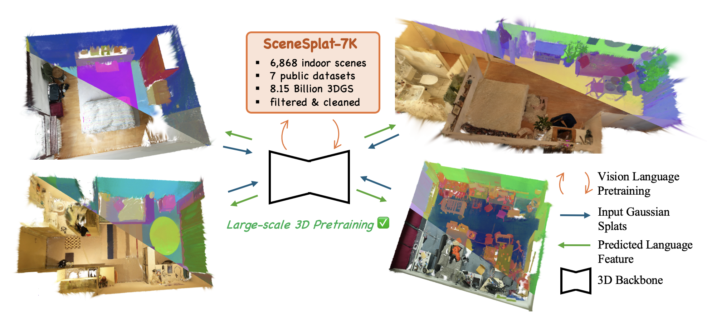
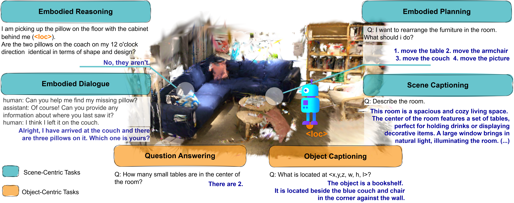
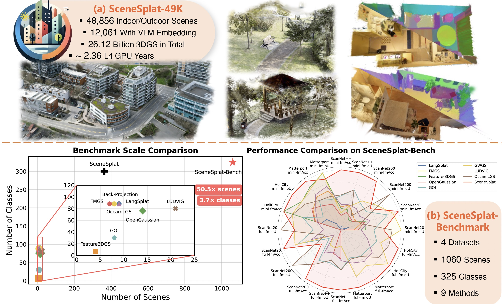
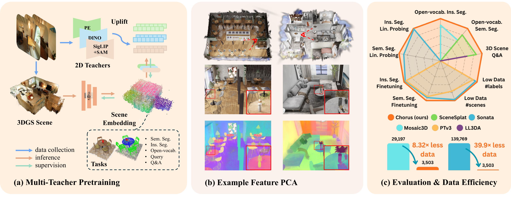

Building a system for robust 3D scene understanding and natural language interaction within complex environments.
We are building a system for robust 3D scene understanding and natural language interaction within complex environments. Our goal is to develop a foundation model that can tokenize complex 3D scenes, perform instance detection, and enable spatial reasoning to answer complex language queries—ultimately working to make 3D scene understanding as accessible and powerful as its 2D counterpart.
Our projects build upon each other over time to expand the systems capabilities.
Dataset of 206K 3DGS objects. Gaussian-MAE architecture as well as a self-supervised training strategy for encoding collected 3D objects.

Dataset of 7K indoor 3D scenes in Gaussian Splatting format. Method for extracting 3D semantic-language pseud-labels leveraging 2D foundation models. Pre-trained scene-level encoder. SotA open vocabulary segementation perforamnce.

Scene-centric 3D vision-language modeling on Gaussian splats with language-aligned scene representations and compact task-relevant tokens for embodied reasoning.

Dataset scaled to 49K 3DGS scenes spanning indoor and outdoor environments. Comprehensive language-3DGS evaluation benchmark directly in 3D over 1060 scenes.

Extended pseudo-label pre-training to multiple 2D foundation model teachers. Pre-trained a 3DGS and a PC scene-level encoder. Demonstrated SotA after fine-tuning on main 3D downstream applications.
Key capabilities of our 3D systems.
Our system takes a 3D scene (3DGS or PC) as input and, in a single neural network forward pass, outputs a feature for each 3D primitive.
Our system provides real-time open-vocabulary 3D content search leveraging the initially extracted 3D features.
Multi-institutional research group.